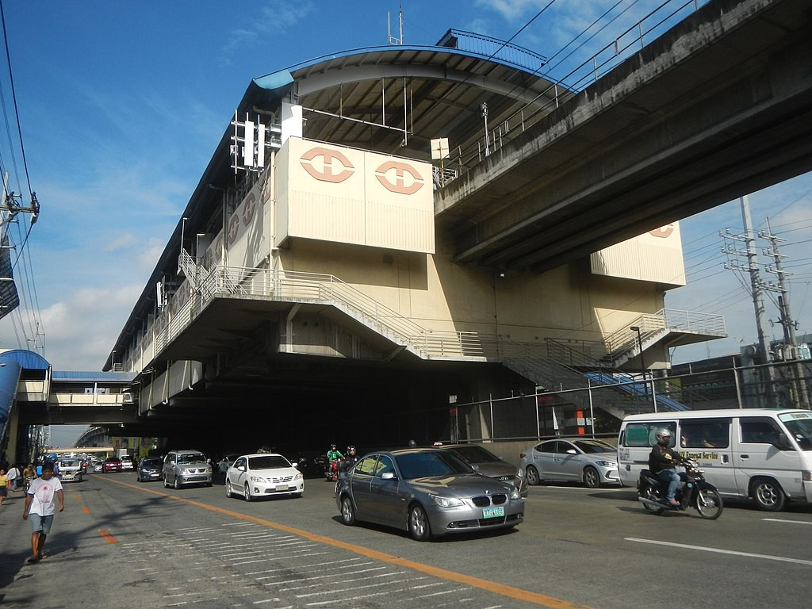

Balintawak
LRT-1 station
Balintawak station is an elevated Manila Light Rail Transit (LRT) station situated on Line 1, and was constructed as part of the Line 1 North Extension Project. It opened on March 22, 2010. The station serves passengers going to and from the northern parts of Luzon using the North Luzon Expressway.
Balintawak is one of two Line 1 stations serving Quezon City, the other one is Fernando Poe Jr. It is the second station for trains headed to Baclaran, the nineteenth station for trains headed to Fernando Poe Jr. It served as the temporary northern terminus of the line before the completion of Roosevelt station in October 2010 and during the temporary closure of that station since September 2020 until December 2022 due to the ongoing construction of the North Triangle Common Station.
The station is located at the boundary of barangays Balingasa, Unang Sigaw, and Apolonio Samson, in front of the Balintawak Market and near the Quezon City–Caloocan boundary. It is located near the Balintawak Cloverleaf.
| Balintawak | |||||||
|---|---|---|---|---|---|---|---|
| General information | |||||||
| Location | 1179 EDSA, Balintawak, Quezon City, Metro Manila, Philippines | ||||||
| Owned by | Department of Transportation Light Rail Transit Authority |
||||||
| Operated by | Light Rail Manila Corporation | ||||||
| Line(s) | Line 1 | ||||||
| Platforms | 2 (2 side) | ||||||
| Tracks | 2 | ||||||
| Construction | |||||||
| Structure type | Overpass | ||||||
| Parking | Yes (Puregold Monumento, Ayala Malls Cloverleaf, Juliana Wet & Dry Market) | ||||||
| Accessible | Yes | ||||||
| Other information | |||||||
| Station code | BW | ||||||
| History | |||||||
| Opened | March 22, 2010 | ||||||
| Services | |||||||
|
|||||||
Balintawak is one of two Line 1 stations serving Quezon City, the other one is Fernando Poe Jr. It is the second station for trains headed to Baclaran, the nineteenth station for trains headed to Fernando Poe Jr. It served as the temporary northern terminus of the line before the completion of Roosevelt station in October 2010 and during the temporary closure of that station since September 2020 until December 2022 due to the ongoing construction of the North Triangle Common Station.
The station is located at the boundary of barangays Balingasa, Unang Sigaw, and Apolonio Samson, in front of the Balintawak Market and near the Quezon City–Caloocan boundary. It is located near the Balintawak Cloverleaf.
Balintawak station was constructed as part of the Line 1 North Extension Project, a 5.4-kilometer extension of LRT-1 to the North Avenue station of MRT Line 3 as part of the MRT-LRT closing the loop project to integrate the operations of the LRT-1 and MRT-3. However, the integration of MRT-3 and LRT-1 operations did not happen, but this will change when the North Triangle Common Station is set to partially open in 2022. Construction of the North Extension started in July 2008 and was completed in 2010. Balintawak station was opened on March 22, 2010.
There are several city buses and jeepneys plying EDSA, as well as A. Bonifacio Avenue below the Balintawak Interchange. A UV Express terminal is also found at Ayala Malls Cloverleaf. The station serves as an interchange with the EDSA Carousel. The EDSA Carousel is accessible via the emergency exits of the station.
The station is served by bus route 39 at the nearby Ayala Malls Cloverleaf.
The station is close to Balintawak Market and adjacent to Puregold Balintawak. An access road to Ayala Land's Cloverleaf estate is built right beside the station. Accessing Ayala Malls Cloverleaf from the station requires riding the shuttle service stationed near the southbound entrance.
- On September 26, 2018, a faulty 1st generation train door was unable to open at the Balintawak station. A passenger pushed the door open and was able to disembark. The next passenger pushed the door but it abruptly closed on him but managed to get through.

View of Balintawak station from street level
| Existing stations | |
|---|---|
|
Baclaran
EDSA Libertad Gil Puyat Vito Cruz Quirino Pedro Gil United Nations Central Carriedo |
Doroteo Jose
Bambang Tayuman Blumentritt Abad Santos R. Papa 5th Avenue Monumento Balintawak Fernando Poe Jr. |
| Under construction | |
|
Redemptorist
MIA Asia World Ninoy Aquino |
Dr. Santos
Las Piñas Zapote Niog |
| North Triangle | |